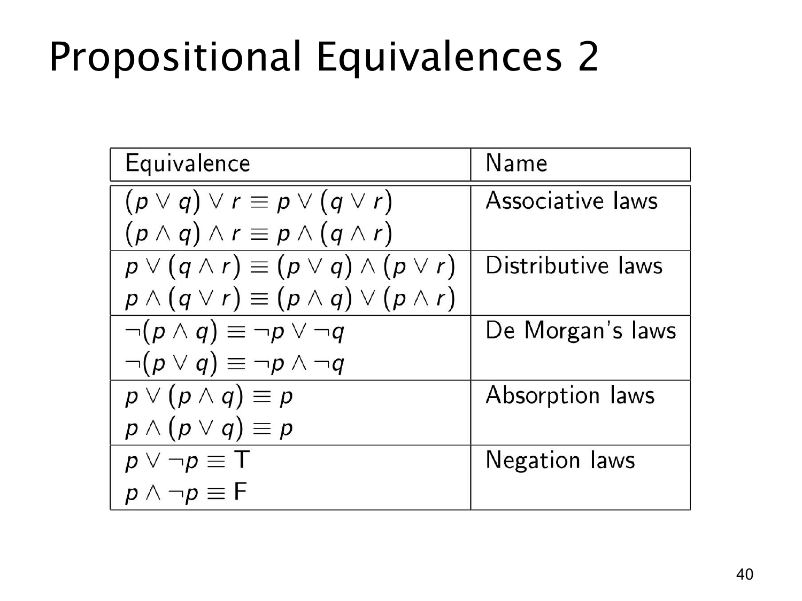

L1.1 · 第 40 页讲解原文
查看这一页课件

命题等价规律（二）：结合、分配、吸收与否定
这页原图是一张等价式表，文字层只抽出了标题，因此要按表中的每一行来读。以下各式的 ≡ 都表示对 p,q,r 的所有真值组合成立。
结合律（associative laws）允许同一种“或”或“且”改变分组：
(p∨q)∨r≡p∨(q∨r),(p∧q)∧r≡p∧(q∧r).
分配律（distributive laws）把一个条件分配到括号两边：
p∨(q∧r)≡(p∨q)∧(p∨r),p∧(q∨r)≡(p∧q)∨(p∧r).
德摩根律（De Morgan’s laws）否定整组时交换“且”“或”：
¬(p∧q)≡¬p∨¬q,¬(p∨q)≡¬p∧¬q.
吸收律（absorption laws）说明括号里重复出现的 p 已经决定整体：
p∨(p∧q)≡p,p∧(p∨q)≡p.
例如第一式中，若 p 真，整个“或”已经真；若 p 假，括号中的 p∧q 也假，所以结果总与 p 相同。最后的否定律（negation laws）是 p∨¬p≡T 和 p∧¬p≡F。
使用表格时先辨认运算符和括号。结合律只是在同一种运算符连续出现时改分组，不能把 p∨(q∧r) 直接随意改成 (p∨q)∧r；若要展开混合运算，必须按分配律完整地写出两项。